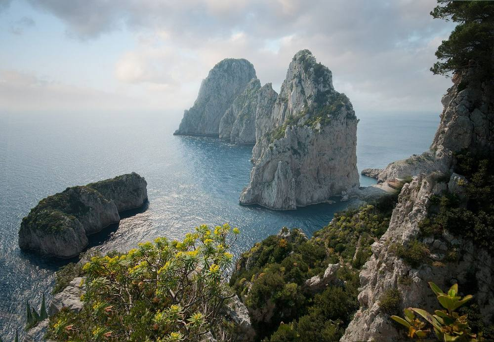

Capri · Area Marina Protetta
Il mare di Capri ha un perimetro di legge dal 4 agosto 2026.
La legge sull'Area Marina Protetta dell'Isola di Capri è stata approvata il 4 agosto 2026. Da quel giorno il mare intorno all'isola ha confini scritti, regole e qualcuno che deve misurare se funzionano.
Il 27 agosto 2026 Alfonso Pecoraro Scanio ha chiesto al Governo di istituire le aree marine protette che mancano ancora, e il lancio è stato ripreso da askanews, Italpress, Il Tempo e Capri Press. L'obiettivo si chiama 30x30: il 30% del mare protetto entro il 2030.
L'11 settembre 2026, alle 16:30, allo Spazio Incontri del Venice Production Bridge dell'Hotel Excelsior, al Lido di Venezia, il video della rete sulle Aree Marine Protette ha ricevuto un riconoscimento del Sorriso Diverso Venezia Award, XVI edizione, nei giorni della 83ª Mostra Internazionale d'Arte Cinematografica. Il premio è organizzato da Università Cerca Lavoro, presieduta da Ilaria Battistelli, con Dream On, con il contributo del Ministero della Cultura e il patrocinio di Rai per la Sostenibilità ESG.

È il terzo anno di fila che la rete e la Fondazione UniVerde portano un video alla Mostra: nel settembre 2024 lo spot sul turismo sostenibile, il 6 settembre 2025 il video «Mare Nostrum» per «Mediterraneo da remare».
«Premio a Venezia al video Ecodigital Verso il 2050 per le aree marine protette. Bello vedere soddisfazione di Ale e Michele che hanno reso concreto il progetto 30X30. Entro il 2030 30% di aree marine protette.»
Alfonso Pecoraro Scanio, 11 settembre 2026Cosa si può copiare
- Scrivere il perimetro dell'area protetta dentro una legge, con una data.
- Pubblicare i dati del monitoraggio in formato aperto e aggiornarli.
- Chiedere insieme le aree marine che mancano, come il 27 agosto 2026.